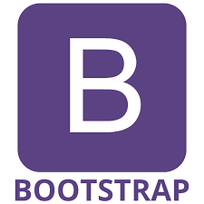

L’objectif de ce projet était de concevoir un portfolio web professionnel. Réalisé seul, en totale autonomie,
ce projet est en constante évolution depuis son lancement en novembre 2024.
Les ressources principales à notre disposition étaient des cours d’introduction à la programmation en HTML et CSS,
ainsi qu’un accès à internet pour approfondir nos connaissances.
La première étape de ce projet a consisté à choisir le contenu et le design du portfolio.
Ensuite, une phase importante a été consacrée aux tests et à la documentation pour la partie programmation.
J’ai personnellement rencontré des défis concernant la présentation web. Par exemple, je souhaitais mettre en avant des images en les positionnant à côté du texte.
Pour y parvenir, j’ai dû apprendre le fonctionnement des tableaux en CSS et améliorer mes compétences dans l’utilisation des flexbox.
Au cours de mes recherches, j’ai découvert la bibliothèque Bootstrap,
qui simplifie la mise en forme en permettant d’ajouter directement dans le code HTML des éléments préconçus, tels que des barres de progression.
Cette bibliothèque, très bien documentée, m’a également permis de gérer efficacement les tableaux. Cependant,
j’ai rapidement constaté que Bootstrap entrait fréquemment en conflit avec mon code CSS existant, ce qui posait des problèmes d’affichage.

Pour résoudre ces difficultés, j’ai pris la décision de repartir de zéro et de reconstruire mon portfolio en utilisant Bootstrap de manière plus structurée et avancée,
afin de limiter les conflits entre les deux langages. Cette refonte m’a permis de mieux comprendre les interactions entre CSS et Bootstrap,
tout en produisant un site plus cohérent et fonctionnel.
Ce projet m’a aidé à développer deux compétences majeures, ma capacité d’apprentissage autonome qui ma donné une meilleure maîtrise des outils web,
et ma capacité de résolution de problèmes techniques qui a renforcé ma compréhension des principes fondamentaux de la programmation web